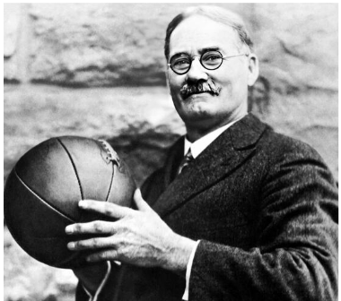

El baloncesto es un deporte de equipo que se juega en una cancha rectangular, donde dos conjuntos de cinco jugadores cada uno intentan anotar puntos lanzando una pelota a través de un aro elevado, conocido como canasta, que está fijado en un tablero en cada extremo de la cancha.
Este juego, inventado por el Dr. James Naismith en 1891, combina habilidades físicas como la velocidad, la agilidad y la fuerza, con destrezas técnicas como el manejo de balón, el tiro, el pase y la defensa. Además, requiere una estrategia de equipo y una toma de decisiones rápida para superar a los oponentes y controlar el flujo del juego.
 https://www.pinterest.es/pin/56506170336870151/El objetivo principal es acumular más puntos que el equipo rival al final del tiempo reglamentario, que se divide en cuartos o mitades, dependiendo de la liga o nivel de juego. Los puntos se pueden anotar de diferentes maneras: tiros de campo (dos puntos), tiros de tres puntos (tres puntos si se lanza desde fuera del arco de tres puntos) y tiros libres (un punto cada uno, otorgados tras ciertas faltas cometidas por el equipo contrario).
El baloncesto se ha convertido en uno de los deportes más populares y ampliamente practicados en el mundo, con ligas profesionales en muchos países y un torneo olímpico que atrae a los mejores jugadores internacionales. Su popularidad se debe en parte a la espectacularidad de sus jugadas, como los mates y los triples, y a la emoción que genera su ritmo rápido y dinámico. Además, ha tenido un impacto cultural significativo, influenciando la moda, la música y el cine, y se ha convertido en un símbolo de trabajo en equipo y perseverancia.
El básquet, también conocido como baloncesto, es un deporte de equipo que se juega con una pelota y dos canastas. El objetivo del juego es anotar más puntos que el equipo contrario lanzando la pelota a través del aro de la canasta.
El básquet exige una buena condición física, coordinación, velocidad, agilidad y capacidad de trabajo en equipo. También requiere de una buena concentración, toma de decisiones y estrategia. Es de destacar que ofrece un espectáculo emocionante y divertido, y es una forma de ejercicio físico y de actividad social para personas de todas las edades eh épocas a destacar 💪🏀.
Antes de empezar a ver las técnicas típicas aplicadas en básquet, primero debemos tener en cuenta, los principiantes atributos que hay que saber de primero respecto a la puntuación, y destreza en algún momento.

Los puntos se pueden anotar de diferentes maneras, como tiros de campo o tiros de cerca (dos puntos), tiros de tres puntos (tres puntos si el tiro se realiza detrás de la línea de tiro libre y por lo tanto la de dos), y tiros libres (un punto cada uno tras una falta)


Liderazgo es pelear por un balón perdido, tener a todo el mundo involucrado, a todos los otros jugadores. Es ser capaz de asumir y delegar. Esa es la única manera en la que puedes obtener el respeto de tus compañeros. Es lograr que todos crean en ti y siempre ofrezcas lo mejor de ti mismo.
- Larry Bird